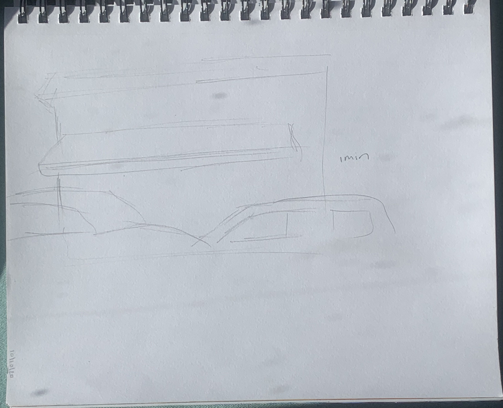

DRAWINGSClick drawings!

Cordova Web explores how individuals, artists, and neighborhoods can help influence a city that is being gentrified and continues to change throughout the pandemic. These themes were first explored when we Rossie and Lisa would meet outside Cordova Market in the summer of 2020. We started by sketching the surroundings, while having engaging conversations with our neighbors, community members, and workers of Cordova Market. Next, we created an interactive piece. On November 3rd, 2020, we hosted a "ritual" that involved community members "mapping" their connection to Cordova Market on a neighborhood map with glow in the dark yarn, creating a "community web". The ritual illustrates our local interdependence as we imagine new ways to weave together food, space, and community engagement in a politics of care. Sidewalk sketching, video interviews, photographing, and a community ritual in public spaces are important tools for mapping engagement with our neighbors. Cordova Web explores how to be involved in one's community, what our role as artists are, and what the role of a neighborhood plays in a city that is being gentrified, and continues to change throughout the pandemic. |